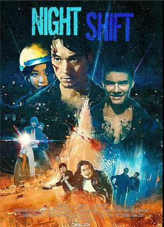
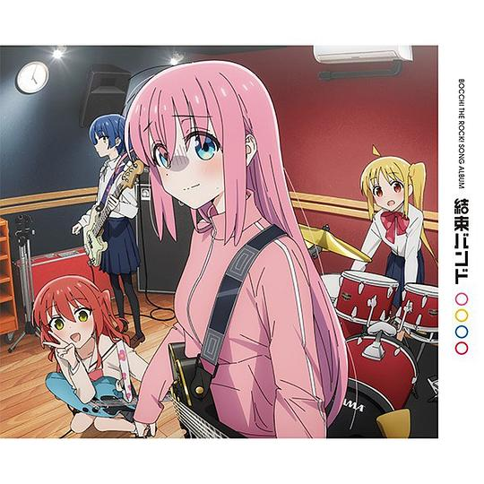
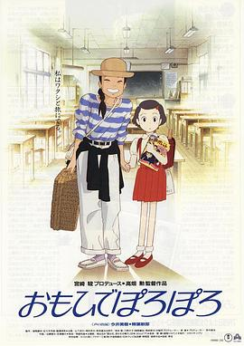
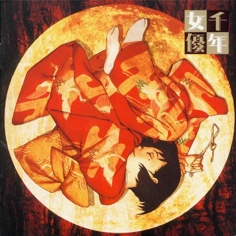
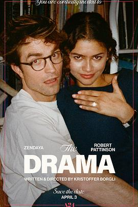

2026年5月
广播发布后不可编辑，所以每条都是那一刻的原话。
2026-05-31 18:13:52
看过 诺曼底72小时 / Pressure ★★★★☆
空镜很好看，故事讲得很干净利落。镜头的调度很见功力，最后的两度发现突转渐渐地浅浅地让我觉得和平真是来之不易。莫叔演得好好哦。里面每一个角色都好武断哦，助理小姐好眼熟hhh。不自觉地与不在一个成本的某部电影相比，疑惑我们为什么拍不出来呢。
2026-05-30 08:34:38
 在读 海子的诗 ★★★★★
在读 海子的诗 ★★★★★
短诗的精选集，没有《海上婚礼》。蓝星诗库的装帧真蛮好看的。开卷第一首《亚洲铜》就深抓我心，海子的文字流连着土地朴实的味道。
2026-05-29 22:31:31
收藏评论到豆列 理解 《铃芽之旅》废墟之上盛开的奇景——新海诚的十年下坠
2026-05-27 15:09:42
 看过 生活大爆炸 第五季 / The Big Bang Theory Season 5 ★★★★★
看过 生活大爆炸 第五季 / The Big Bang Theory Season 5 ★★★★★
Raj的包袱怎么这样抖出来的，真让人哭笑不得。ep13里真是为两个人捏把汗啊。和siri恋爱可真超前。ep20里Penny真是好哦。ep21没想到真把霍金给请来了。ep22的小插曲真是编排得太好了，Howard的一番真心话教人动容。ep23没事为什么要怼俄国人，不理解。ep24的gee成婚好浪漫，双方的誓词都好感人。
2026-05-26 20:46:48
看过 鲸落
借2016的毕设作品。夜子的旋律很适合画面。
2026-05-26 16:51:02

夜景拍得还蛮好看。几个长连贯的动作很有意思。
2026-05-25 10:39:47
 读过 文学少女的追想画廊 01 ★★★★★
读过 文学少女的追想画廊 01 ★★★★★
好多神之插图。最后的特别短篇看得我热泪盈眶。比较喜欢对正篇引用书籍与其评价的集合。
2026-05-24 23:11:37
收藏小组讨论到豆列 收藏
各位组员们，盼星星盼月亮，我组的专属答题活动终于来啦！《生活大爆炸》十级学者统一考试正式上线，TBBT粉们快来踊跃参与，看看大家能得多少分？ 成功通过考试的组员（取得30分及以上），可以获得专属挂件——谢耳朵T恤！速速挂起来吧！ 同时感谢广大组员们对于考试题目的积极贡献，比心！ 不能答题的组员， 请点击链接将豆瓣App更新至最新版本。


2026-05-24 23:09:07
收藏小组讨论到豆列 理解 生活大爆炸中提到的剧/电影
2026-05-23 23:43:25
看过 电锯惊魂2 / Saw II ★★★★☆
反转反转再反转，看得太过瘾。其实抛开竖锯的作为，其思想还是可以理解的：人只有失去过才懂得珍惜啊。剪辑上大分，有些转场效果很棒。
2026-05-23 16:05:26
看过 普通事故 / یک تصادف ساده ★★★★★
开场的长镜头浓进夜色里我甚至看不出摄像机的运动，而中段与最后的定场长镜头更是由于演员的发挥看得我神乎其神。全片几乎没有配乐，但对情绪的把握与烘托全是由镜头来完成的，加之拍摄环境艰苦，足以见导演功力之深。关于政治方面没法评价，因为对伊朗政治环境不怎么了解。倒是最后一幕的声音设计太出色，看得我十分压抑。
2026-05-22 23:19:30
看过 追逐繁星的孩子 / 星を追う子ども ★★★☆☆
真是有宫老的形但没宫老的功力啊，要讲的东西太多导致人物的进场与出场以及相关的行为转变得太快招致叙事的空浮。看得出来诚哥并不是想讲一份童话，虽然人设也比较幼态，但毕竟有不少令人不适的地方，同时也能看到后期作品的大部分影子，比如冒险、环形山、异世界或者长发男。开头摄像机的运动很值得说道说道，背动真是好厉害。瞬君无论说的话还是星空下的坐姿也太像渚薰了吧！😂。生与死的追问果然太庞大，诚哥没把握住，只草草地给出了“带着不幸活下去，放下过去也是一种祝福”的中庸答卷。
2026-05-21 14:25:04
 在读 文学少女 爱恋插话集 02 ★★★★☆
在读 文学少女 爱恋插话集 02 ★★★★☆
还是可惜琴吹小姐的爱情啊。震惊首页彩图的泳装。
2026-05-20 19:42:07
 读过 文学少女 爱恋插话集 01 ★★★★☆
读过 文学少女 爱恋插话集 01 ★★★★☆
开篇的小番外就差点乐坏我。流人的那篇看得很欢乐。但短篇集果然没正传淋漓啊。
2026-05-20 15:35:01
看过 昨日青春 / Happyend ★★★★☆
开头的配乐好震撼，整篇的配乐导演都很有考究，大部分使用了古典钢琴，甚至通过角色之之口点出了如今的音乐远不比过去的动听。不愧是音乐家的孩子。但同时，错乱中的灯投下的影子也是导演的天才时刻。最喜欢用拖把画地为牢后的不直观的暧昧。长毛时时刻刻在说的及时行乐却因为现实的政治处处碰壁，到底是他没认清政治与每个人息息相关的本质，所以他最后独自承担也是成长的一部分。倒是寸头他的出发点是因为身份政治问题所去游行示威，最后却不知道自己想要的是什么。
2026-05-19 22:16:58
 看过 爱犬莫福 / Merv ★★★☆☆
看过 爱犬莫福 / Merv ★★★☆☆
译名其实可以更好听些。开篇的长镜头技术力还蛮高的。人类果然不能失去狗狗啊，就是剧情倘使能精简至一小时半里就好。btw，导演的歌品还是不错的。
2026-05-19 17:00:02
在读 文学少女 爱恋插话集 01 ★★★★☆
开篇的小番外就差点乐坏我。
2026-05-19 16:18:48
在听 辞职信 ★★★★☆
左手和右走可能没什么含义吧。旋律依然动听。
2026-05-19 15:36:19

乐器各司其职，这才是高中生乐队的魅力啊。
2026-05-19 14:52:31
看过 中邪 ★★★★☆
背景声里持续的电流声，不断的狗吠与鸡鸣，氛围感做得很不错，最后的确让我的鸡皮疙瘩起来了。结尾可圈可点吧。
2026-05-18 23:05:22
 看过 怪物之子 / バケモノの子 ★★★★☆
看过 怪物之子 / バケモノの子 ★★★★☆
动作戏的动态画得太好了，打戏看得很舒服。结尾的本质依旧是儿子弑父后才获得的成长，这样也使与自己亲生父亲生活在一起有了合理的动机。但熊大才是最值得说道说道的那位主角，无父无母的他的成长轨迹到底更亮眼。意外《白鲸》作为线索的存在，听过马尔克斯的推荐，但没时间拜读。长老被刀吓到的那卡笑喷了。
2026-05-17 22:31:23

喜欢几次镜头给到过去的转场，惊叹转角下小孩走着走着飞上天的神来之笔。但故事娓娓道来的却是虚伪，讲故事的人总会有什么藏着没说的。对农村生活的热爱也仅仅浮于皮毛，婚后生活之所以没拍是因为注定不圆满。讨厌角色设计，苹果肌就不该画出来，像背景美术一样适当地留白不好么，尤其迎接主角时站桩的笑眯眯最渗人。意外益生菌的配音演出。
2026-05-16 23:22:36
看过 突袭2：暴徒 / The Raid 2: Berandal ★★★★☆
预算上来后片尾好看多了，只是文戏不是背景，应该是一场接着一场战斗的合理化，剧本的野心太大，也没拍出日本组与组斗争的戏剧度来。泥地的长镜头有些剪辑点太明显。长发老爷爷原来演的不是一个角色，我还以为又复活了呢。倒是下雪的奇观场面很精彩。车顶的视角很少见。车厢战软绵绵的不好看。最后也没看懂究竟怎么回事，意外龙平的客串。总体上没第一部紧凑，动作设计上也没第一部深刻了。
2026-05-15 22:51:38
看过 突袭 / The Raid ★★★★☆
剧情太无脑，只是对队长这么菜感到意外。喜欢兄弟1v2的动作设计，弟弟一直在关键时刻补刀或者救哥哥一把，就如最后也救了哥哥出去。镜头设计也很有意思，不安感瞬间就上来了。总之抛开合理，有人愿意打给我看我就很开心了。(o^^o)
2026-05-14 20:43:20
 读过 文学少女 08 ★★★★☆
读过 文学少女 08 ★★★★☆
心叶你怎么就是不懂啊，这样三心二意对如此愿意帮你的琴吹同学很糟糕啊！美羽看热闹不觉事大，拱火真厉害。琴吹同学果然还是太好了。不过故意杀人真的不会刑事立案么。最后的代理叙述果然没让我失望，一环套这一环，一面翻过一面，很精彩。所有的相遇皆是必然啊。对《窄门》的理解实话讲有些肤浅了。
2026-05-14 17:23:25
 读过 文学少女 07 ★★★★★
读过 文学少女 07 ★★★★★
居然是以《窄门》为蓝本的。这样对琴吹同学真的公平么。琴吹同学也太好了吧。对学姐身份的转变感到意外，却从第一卷开始细想也获得过去。
2026-05-14 12:25:20
想看 火遮眼
2026-05-12 17:31:37
在读 文学少女 07 ★★★★★
居然是以《窄门》为蓝本的。
2026-05-12 14:34:32

喜欢lotus2。
2026-05-12 14:33:46
听过 海がきこえる ★★★★★
年少错把小号当萨克斯。
2026-05-12 10:53:28
 想读 玛侬·列斯戈
想读 玛侬·列斯戈
2026-05-12 10:43:22
 读过 文学少女 06 ★★★★☆
读过 文学少女 06 ★★★★☆
为什么会有两种形式的注释？
2026-05-11 16:27:59
 读过 文学少女 05 ★★★★☆
读过 文学少女 05 ★★★★☆
心叶就这样被玩弄在股掌之中么。我去真是腹黑啊，高潮一波又一波的，看得真爽啊！居然又有男人打架也有女人打架。我想当美羽小姐的狗。(´･ω･`)结尾好炸裂！
2026-05-09 17:20:26
在读 文学少女 05 ★★★★☆
心叶就这样被玩弄在股掌之中么。
2026-05-09 11:38:09
 读过 文学少女 04 ★★★★☆
读过 文学少女 04 ★★★★☆
老师也真是太不正经了。七濑同学真是可爱捏。没想到败犬到最后才确定下来。
2026-05-08 20:30:18
看过 真人快打2 / Mortal Kombat 2 ★★★☆☆
没想到“无删改”居然成了我去看这部电影的最大噱头。其实对游戏一无所知，单纯去过个眼瘾，这部分是合格的。但剧情上漏洞大了去了，明明那个机械臂哥们儿不用死的，刘康那时候跑哪去了。最后的平行打斗还算可以，最后的DJ还蛮好听的。没想到IMAX画幅还能虚晃一枪。😂。
2026-05-07 23:11:37

我要看的就是这样就算乱七八糟也要抛开一切勇敢去爱去接纳对方的爱情故事啊。虽然影片抛出了这样一个大的社会议题并且不给出任何的回答甚至结尾对所谓这样犯罪的标签处理得很不好，但情侣间不断扮演的重新开始也是一种答案，一切没到无可挽回的地步时还是可以重新开始的。伴郎是真兄弟啊。我喜欢胶片摄影所带来的粗粝感，也喜欢封面闪光时的红眼。剪辑挺会蒙太奇的，效果还不错。中意赞达亚出现时沉闷的声音设计。
2026-05-07 17:28:56
在读 文学少女 04 ★★★★☆
老师也真是太不正经了。七濑同学真是可爱捏。
2026-05-07 14:51:02
 读过 下垂眼4 ★★★★★
读过 下垂眼4 ★★★★★
封面很好看，这一本是图书馆的独苗了。
2026-05-07 14:24:10
在读 下垂眼4 ★★★★★
封面很好看，这一本是图书馆的独苗了。
2026-05-07 11:42:33
 读过 下垂眼 Vol.3 ★★★★★
读过 下垂眼 Vol.3 ★★★★★
没想到蛮多黄段子的。_(:з」∠)_
2026-05-07 11:20:40
在读 下垂眼 Vol.3 ★★★★★
没想到蛮多黄段子的。_(:з」∠)_
2026-05-03 10:25:06
 读过 下垂眼VOL.2 ★★★★★
读过 下垂眼VOL.2 ★★★★★
第二册本以为能借到手，结果辗转还是在公众号看的全文，没收录日记真是可惜哦。
2026-05-02 21:22:56
在读 下垂眼VOL.2 ★★★★★
第二册本以为能借到手，结果辗转还是在公众号看的全文。